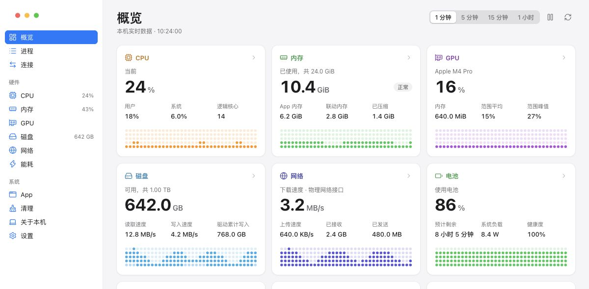

常驻菜单栏。
把想看的指标放进菜单栏。关闭窗口只是隐藏，原生采样不会中断。
免费开源的系统监控工具，支持 macOS、Windows 和 Linux。CPU、内存、磁盘、网络、进程与连接尽在掌握，常用指标常驻菜单栏。
· 选择其他版本

从六个硬件面板的概览开始，再深入到每个核心的活动，回看本次运行最近一小时的变化。
把想看的指标放进菜单栏。关闭窗口只是隐藏，原生采样不会中断。
直接读取系统原生计数器。无需账户，不连云端，历史只保存在内存中。
按资源排序进程，按应用汇总占用，查看每一条 TCP 与 UDP 连接。
分析磁盘占用，逐项核对所选内容，再移入废纸篓。
macOS、Windows 和 Linux 均免费。无需账户，无需订阅。
支持 Apple Silicon 与 Intel
采用临时签名，尚未公证。
适用于 x86_64 电脑
安装包未签名，需要 WebView2。
适用于 x86_64 桌面
需要 GTK 3、WebKitGTK 4.1 和桌面托盘支持。
版本 0.2.6发行说明SHA-256 校验值
核心采集已在四个构建目标上测试。桌面交互已在 macOS Apple Silicon 验证；Windows/Linux 桌面交互及电池、GPU 实机覆盖仍在进行。GPU 与功耗读数取决于硬件和驱动支持。
不需要。RockshinOps 在本机读取系统指标，历史数据仅保留在本次运行的内存中。无需账户，也无需配置托管监控服务。
分析是只读的。你可以核对所选项目并将其移入系统废纸篓；清空废纸篓需要确认。macOS 还支持核对应用和可能的关联文件。退出和强制退出进程需要单独确认。
支持。应用默认跟随系统语言。也可以在设置中选择「跟随系统」「中文」或「English」，选择后自动保存。
可以。RockshinOps 采用 MIT 许可证，使用 Go、MyGo 和 TypeScript 构建。 在 GitHub 阅读源代码